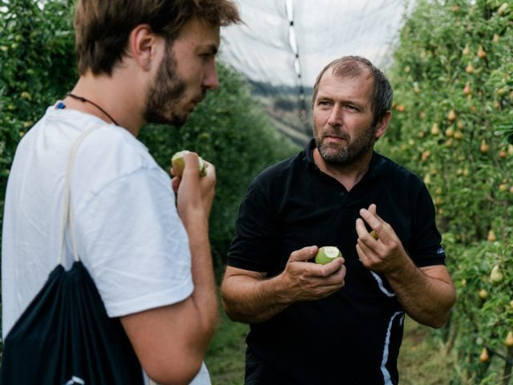

1000 Things
Blog
Etappe 33: Tulln an der Donau nach Wien
Falls euch einmal jemand fragt, wie weit es von Bregenz nach Wien zu Fuß ist: 878,88 Kilometer. Diese Distanz bin ich in den vergangenen 47 Tagen gewandert, gelaufen, geschlendert, teilweise fast gekrochen. Aber ich habe es geschafft, ich habe einmal Österreich von West nach Ost durchquert. Ich durfte dabei wunderbare Begegnungen genießen, hatte die besten …
weiterlesen →-
PEOPLE
St Peter in der AuWoher kommen unsere Lebensmittel? Ein Besuch beim Zurück zum Ursprung Bauern – Teil 2
„Das ist die Helena, die Pia, die Muli und da drüben steht die Sissi“, Alois Lainerberger zeigt mir stolz seine Kühe. Alle 17 Bio-Rinder auf seinem Hof haben einen Namen: „manchmal sind sie gar nicht so leicht auseinander zu halten“, erklärt der Bio-Bauer. Gemeinsam mit seiner Frau Felicitas betreibt er den Hof in St. Peter …
weiterlesen → -
TAG 46
TULLNEtappe 31+32: Krems – Sachsendorf – Tulln
Zu Beginn hatte ich noch keine Ahnung, was mich im Zuge der Wanderei erwartet. Jetzt weiß ich: die letzten sieben Wochen waren eines der größten Abenteuer, das ich in meinen 26 Jahren erleben durfte. Man kann den Vergleich mit einem bekannten Hollywoodfilm schon ziehen, das ganze Projekt war wie eine Schachtel Pralinen. Manche schmecken ungemein …
weiterlesen → -
TAG 44
KREMSEtappe 30: Spitz an der Donau nach Krems
Hier in Krems bin ich ja fast in einer Metropole gelandet, zumindest dieses Wochenende tut sich einiges. Ich bin in einer wahnsinnig netten WG mitten im Zentrum untergekommen, zwei Stockwerke unter mir tobt gerade das Kremser Marillenfest. Die Blasmusikkapelle marschiert durch die Straßen. Tausende Besucher wälzen sich durch die Innenstadt und feiern alles zum Thema …
weiterlesen →
Einmal quer durch Österreich – Meine Route
Einmal quer durch Österreich – Meine Route
Jetzt geht es also tatsächlich in Kürze los! Ich starte ganz im Westen Österreichs in mein großes Sommerabenteuer: die 1000things Wanderei. Dabei werde ich über 900 Kilometer von Bregenz nach Wien zu Fuß gehen und dafür wohl knapp zwei Monate brauchen. Meine hochwissenschaftlichen Berechnungen haben ergeben, dass ich rund um den 19. Juli wieder in …
weiterlesen →